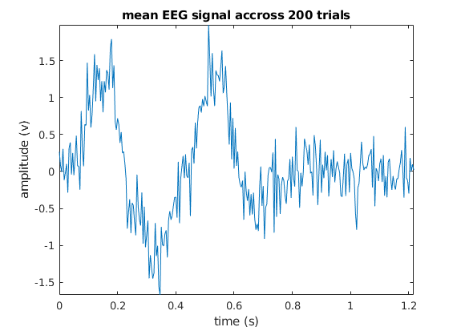

load('EEGdata.mat'); plot(t, EEGdata); xlim([t(1) t(end)]); % there should be an amplitude spike shortly after a stimulus ind_event = find(event==1); between = diff(ind_event); % there's different amount of samples between events min_samples = min(between); % the minimum amount of samples between 2 consecutive events is 292 EEGsorted= []; for i=1:200 v = EEGdata(ind_event(i):ind_event(i)+292); EEGsorted = [EEGsorted v]; end EEGmean = mean(EEGsorted, 2); sampleLength = mean(diff(t)); % get the average temporal difference between samples time = 0:sampleLength:sampleLength*(293-1); plot(time,EEGmean) title('mean EEG signal accross 200 trials') xlabel('time (s)'); xlim([time(1) time(end)]); ylim([min(EEGmean) max(EEGmean)]); ylabel('amplitude (v)'); saveas(gcf, 'mean_eeg_time.png'); % we can see a positive ERP right before the 50th sample, followed by a % negative potential at around the 80th sample, and another positive % potential at around 130th sample. % after looking at the t vector it seems it's sampling once every 0.0042 % seconds, so after converting to that timeline it seems that the potentials % occur at respectively ~200ms, ~350-400ms and ~550ms which are likely % components P200 (aka P2), N400 and P600 % the latter two are associated with grammatical error/unexpected words % if I recall correctly